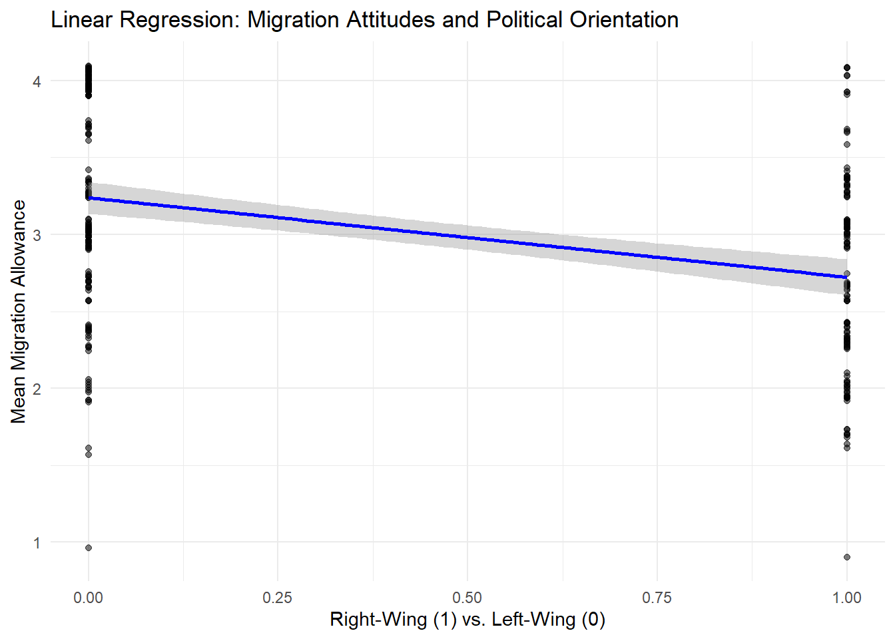
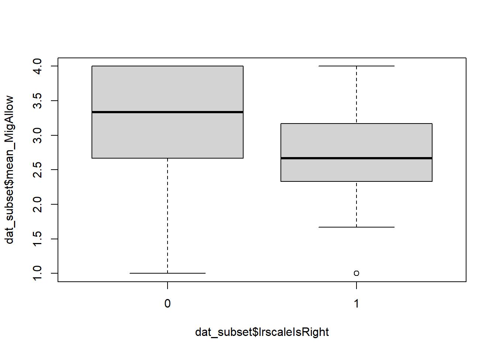

# none global variables definedMixed Effects Logistic Regression (GLLM)
Background Information
This is an R Markdown document. Instructions for writing these documents and background information can be found in the book written by Xie, Allaire, and Grolemund (2018) When you execute code within the document, the results appear beneath the code. This is an R Markdown document. Instructions for writing these documents and background information can be found in the book written by Xie, Allaire, and Grolemund (2018) When you execute code within the document, the results appear beneath the code. This file contains summary statistics, respectively the analysis step (confirmatory and exploratory analyses). Files are split into multiple subfiles like data processing and data analyses steps, which follows the classical data-analysis pipeline (see Peng and Matsui 2016; Wickham and Grolemund 2017).
Global Variables
get packages, raw data, functions
### install and load packages
# if packages are not already installed, the function will install and activate them
usePackage <- function(p) {
if (!is.element(p, installed.packages()[,1]))
install.packages(p, dep = TRUE, repos = "http://cran.us.r-project.org")
require(p, character.only = TRUE)
}
usePackage("afex")
usePackage("tidyverse") # ggplot2 will be loaded
usePackage("lme4") # mixed models / GLMMs
usePackage("afex") # mixed model helpers (optional)
usePackage("lattice") # plot random effects
usePackage("multilevel") # generate multilevel data with different ICCs
usePackage("haven") # Import SPSS and other formats
usePackage("compiler")
usePackage("parallel")
usePackage("boot")
usePackage("GGally")
### load data files
## change working directory
setwd("data")
## load data
dat <- readRDS(file = "dat_SPSS_subset.rds")Motivating Logistic Models
dim(dat)[1] 2358 21summary(dat$lrscale) Min. 1st Qu. Median Mean 3rd Qu. Max. NA's
0.000 3.000 5.000 4.388 5.000 10.000 97 table(dat$lrscale_dummy)
left middle right
159 1977 125 dat$lrscaleIsMissing <- ifelse(test = is.na(dat$lrscale), yes = 1, no = 0)
table(dat$lrscaleIsMissing)
0 1
2261 97 dat$lrscaleIsRight <- as.character(dat$lrscale_dummy)
dat$lrscaleIsRight[dat$lrscaleIsRight == "right"] <- 1
dat$lrscaleIsRight[dat$lrscaleIsRight == "left"] <- 0
dat$lrscaleIsRight[dat$lrscaleIsRight == "middle"] <- NA
dat$lrscaleIsRight <- as.numeric(dat$lrscaleIsRight)
table(dat$lrscaleIsRight)
0 1
159 125 dat_subset <- dat[,c("lrscaleIsRight", "mean_MigEnrich", "mean_MigAllow", "stflife", "rlgdgr",
str_subset(string = colnames(dat), pattern = "^trst"))]
dim(dat_subset)[1] 2358 12dat_subset <- na.omit(dat_subset)
dim(dat_subset)[1] 267 12m <- glm(lrscaleIsRight ~., data = dat_subset, family = binomial)
summary(m)
Call:
glm(formula = lrscaleIsRight ~ ., family = binomial, data = dat_subset)
Coefficients:
Estimate Std. Error z value Pr(>|z|)
(Intercept) 1.22472 0.87530 1.399 0.16175
mean_MigEnrich -0.28713 0.09169 -3.132 0.00174 **
mean_MigAllow -0.87416 0.28320 -3.087 0.00202 **
stflife 0.18990 0.07285 2.607 0.00914 **
rlgdgr 0.19979 0.05015 3.984 6.78e-05 ***
trstprl 0.05260 0.09684 0.543 0.58702
trstlgl 0.09735 0.07642 1.274 0.20267
trstplc -0.04762 0.07375 -0.646 0.51845
trstplt -0.17299 0.11937 -1.449 0.14728
trstprt 0.17105 0.11423 1.497 0.13430
trstep -0.15955 0.09057 -1.762 0.07814 .
trstun 0.12286 0.07969 1.542 0.12313
---
Signif. codes: 0 '***' 0.001 '**' 0.01 '*' 0.05 '.' 0.1 ' ' 1
(Dispersion parameter for binomial family taken to be 1)
Null deviance: 364.42 on 266 degrees of freedom
Residual deviance: 285.17 on 255 degrees of freedom
AIC: 309.17
Number of Fisher Scoring iterations: 4dat_subset <- dat[,c("lrscaleIsRight", "mean_MigEnrich", "mean_MigAllow", "mean_Trust", "stflife", "rlgdgr")]
dim(dat_subset)[1] 2358 6dat_subset <- na.omit(dat_subset)
dim(dat_subset)[1] 283 6m <- glm(lrscaleIsRight ~., data = dat_subset, family = binomial)
summary(m)
Call:
glm(formula = lrscaleIsRight ~ ., family = binomial, data = dat_subset)
Coefficients:
Estimate Std. Error z value Pr(>|z|)
(Intercept) 1.41416 0.74696 1.893 0.058330 .
mean_MigEnrich -0.21609 0.08194 -2.637 0.008358 **
mean_MigAllow -0.89089 0.26247 -3.394 0.000688 ***
mean_Trust 0.05400 0.07873 0.686 0.492831
stflife 0.14650 0.06593 2.222 0.026265 *
rlgdgr 0.18240 0.04533 4.024 5.73e-05 ***
---
Signif. codes: 0 '***' 0.001 '**' 0.01 '*' 0.05 '.' 0.1 ' ' 1
(Dispersion parameter for binomial family taken to be 1)
Null deviance: 387.98 on 282 degrees of freedom
Residual deviance: 316.98 on 277 degrees of freedom
AIC: 328.98
Number of Fisher Scoring iterations: 4step.model <- m %>% stepAIC(trace = FALSE)
summary(step.model)
Call:
glm(formula = lrscaleIsRight ~ mean_MigEnrich + mean_MigAllow +
stflife + rlgdgr, family = binomial, data = dat_subset)
Coefficients:
Estimate Std. Error z value Pr(>|z|)
(Intercept) 1.49475 0.73713 2.028 0.04258 *
mean_MigEnrich -0.19644 0.07652 -2.567 0.01026 *
mean_MigAllow -0.89409 0.26285 -3.402 0.00067 ***
stflife 0.15390 0.06500 2.367 0.01791 *
rlgdgr 0.18746 0.04479 4.186 2.85e-05 ***
---
Signif. codes: 0 '***' 0.001 '**' 0.01 '*' 0.05 '.' 0.1 ' ' 1
(Dispersion parameter for binomial family taken to be 1)
Null deviance: 387.98 on 282 degrees of freedom
Residual deviance: 317.45 on 278 degrees of freedom
AIC: 327.45
Number of Fisher Scoring iterations: 4coef(step.model) (Intercept) mean_MigEnrich mean_MigAllow stflife rlgdgr
1.4947525 -0.1964367 -0.8940936 0.1538956 0.1874609 # to interpret the params:
exp(coef(step.model)) - 1 (Intercept) mean_MigEnrich mean_MigAllow stflife rlgdgr
3.4582329 -0.1783467 -0.5910219 0.1663691 0.2061831 for interpretation of coefficients, see: https://www.methodenberatung.uzh.ch/de/datenanalyse_spss/zusammenhaenge/lreg.html
ggplot(dat_subset, aes(x = lrscaleIsRight, y = mean_MigAllow)) +
geom_jitter(height = 0.1, width = 0, alpha = 0.5) +
geom_smooth(method = "lm", se = TRUE, color = "blue") +
labs(y = "Mean Migration Allowance",
x = "Right-Wing (1) vs. Left-Wing (0)",
title = "Linear Regression: Migration Attitudes and Political Orientation") +
theme_minimal()`geom_smooth()` using formula = 'y ~ x'
lm <- lm(formula = lrscaleIsRight ~ mean_MigAllow, data = dat_subset)
summary(lm)
Call:
lm(formula = lrscaleIsRight ~ mean_MigAllow, data = dat_subset)
Residuals:
Min 1Q Median 3Q Max
-0.9411 -0.4414 -0.1915 0.4753 0.8085
Coefficients:
Estimate Std. Error t value Pr(>|t|)
(Intercept) 1.19097 0.11997 9.927 < 2e-16 ***
mean_MigAllow -0.24986 0.03875 -6.448 4.92e-10 ***
---
Signif. codes: 0 '***' 0.001 '**' 0.01 '*' 0.05 '.' 0.1 ' ' 1
Residual standard error: 0.4647 on 281 degrees of freedom
Multiple R-squared: 0.1289, Adjusted R-squared: 0.1258
F-statistic: 41.58 on 1 and 281 DF, p-value: 4.922e-10predict(lm)[1:5] 1 2 3 4 5
0.1915417 0.6912579 0.1915417 0.6912579 0.5246858 boxplot(dat_subset$mean_MigAllow ~ dat_subset$lrscaleIsRight)
Mixed Effects Logistic Regression
Mixed effects logistic regression is a special case of a Generalized Linear Mixed Model (GLMM), in which a binary outcome is modeled via a logit link, and both fixed (population-level) and random (cluster-level) effects enter the linear predictor.
Model formula
In matrix form, a GLMM is written as:
\mathbf{y} = \mathbf{X} \boldsymbol{\beta} + \mathbf{Z} \mathbf{u} + \boldsymbol{\varepsilon}
where
- \mathbf{y} is the N\times1 response vector,
- \mathbf{X} (N\times p) and \boldsymbol{\beta} (p\times1) are the fixed-effects design matrix and coefficients,
- \mathbf{Z} (N\times q) and \mathbf{u} (q\times1) are the random-effects design matrix and (unobserved) random effects
- \boldsymbol{\varepsilon} is the residual error vector :contentReferenceoaicite:0.
For non-Gaussian outcomes we apply a link function g(\cdot). Letting
\eta = \mathbf{X}\beta + \mathbf{Z}u,
the GLMM is specified as
g\bigl(E(\mathbf{y}\mid \mathbf{u})\bigr) = \eta.
In logistic GLMMs g(p)=\log\bigl(p/(1-p)\bigr) is the logit link and y_{ij}\mid u_j\sim\mathrm{Bernoulli}(p_{ij})
Random effects are assumed
\mathbf{u}\sim N(\mathbf{0},\,\mathbf{G}),
with \mathbf{G} a variance–covariance matrix (e.g. a scalar variance for random intercepts), and residuals (conditional on u) typically independent.
Key points
- Conditional distribution
\;y_{ij}\mid u_j\sim\text{Bernoulli}(p_{ij}), \;g(p_{ij}) = X_{ij}\beta + Z_{ij}u_j.
- Link function
Logit: g(p)=\log\{\tfrac{p}{1-p}\},\;g^{-1}(\eta)=\tfrac{e^\eta}{1+e^\eta}.
- Fixed vs. random effects
Fixed effects \beta capture population-level trends; random effects u capture cluster-specific shifts (e.g. subjects, sites).
- Estimation
Maximized via (adaptive) Gauss–Hermite quadrature or Laplace approximation, often with specialized optimizers to ensure convergence.
- Interpretation
Estimates on the log-odds scale; exponentiating gives cluster-conditional odds ratios.
“hands on”: try to set up a Mixed Effects Logistic Regression yourself
read and copy code from: https://stats.oarc.ucla.edu/r/dae/mixed-effects-logistic-regression/ (till section “Predicted probabilities and graphing”)
References
Peng, Roger D., and Elizabeth Matsui. 2016. The Art of Data Science: A Guide for Anyone Who Works with Data. Lulu.com. https://bookdown.org/rdpeng/artofdatascience/.
Wickham, Hadley, and Garrett Grolemund. 2017. R for Data Science: Import, Tidy, Transform, Visualize, and Model Data. "O’Reilly Media, Inc.". https://r4ds.had.co.nz/.
Xie, Yihui, J. J. Allaire, and Garrett Grolemund. 2018. R Markdown: The Definitive Guide. New York: Chapman; Hall/CRC. https://doi.org/10.1201/9781138359444.